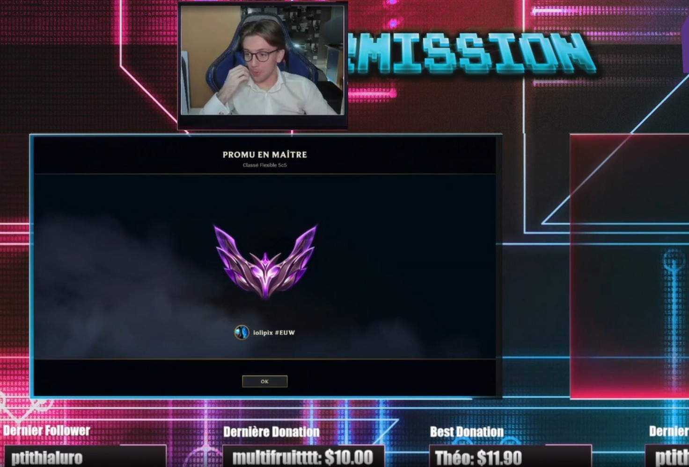
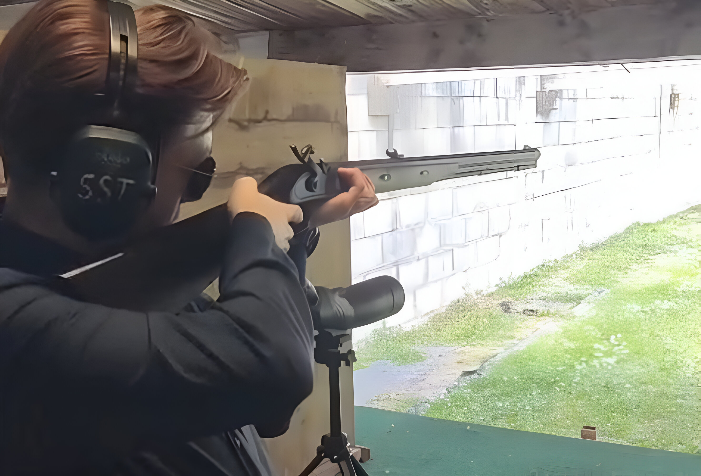
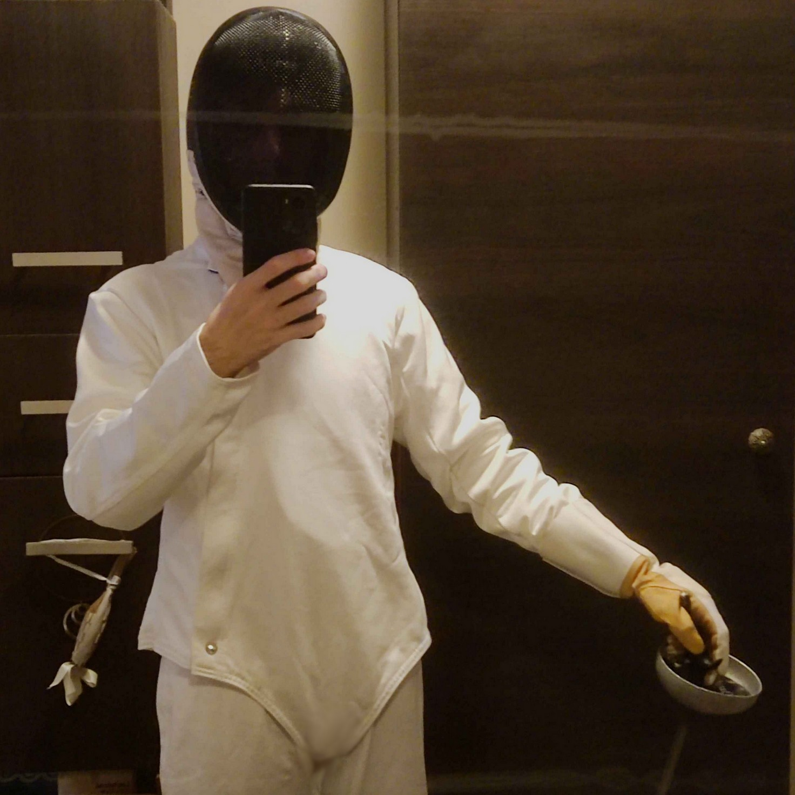
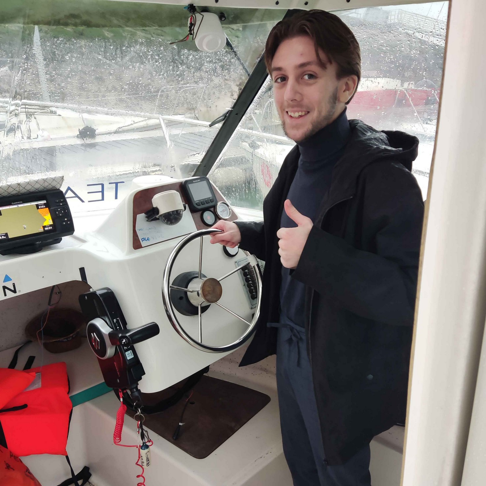
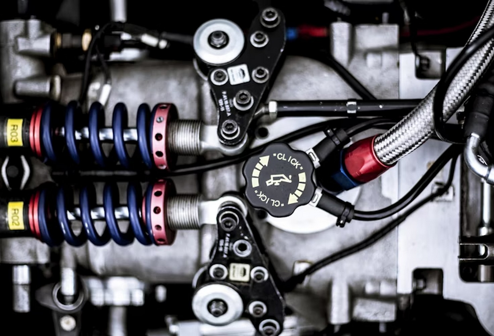

Ayant une très grande passion pour les jeux vidéo, j’ai développé de manière significative mes connaissances dans ce domaine pendant mon adolescence, notamment sur leur histoire et leur technologie.
Passions

L’un de ces jeux m’a particulièrement passionné : League of Legends. Assurant un bon niveau au poste d’ADC, j’ai atteint le top 0,002 % des meilleurs joueurs du monde en file flexible (environ top 10 000).
Les sciences ont toujours été un domaine dans lequel j’excelle. Passionné par les mathématiques, la physique, l’astronomie et la technologie, je n’ai jamais cessé de me documenter sur ces sujets, malgré mon choix d’emprunter une voie littéraire pour m’adapter au parcours que je souhaitais suivre.

Ayant reçu une éducation martiale, que ce soit à travers des valeurs telles que l’ordre, la discipline et l’expérimentation, mais aussi grâce à ma connaissance des armes et des armées, j’ai choisi de rejoindre le Club de Tireurs Sportifs de Saintonge.

En primaire, j’ai décidé de débuter l’escrime afin d’apprendre à manier l’épée. Cependant, le premier club d’escrime étant éloigné, je ne pouvais pas supporter les longs trajets pour de si petits entraînements. Les plaisirs d’une maison dans la campagne de Beauce sont à nuancer avec le désert des infrastructures... Plus tard, j’ai repris l’escrime et pu continuer mon apprentissage de l’épée.

Ayant un très bon sens météorologique, cartographique et de l’orientation, ainsi qu’habitant à La Rochelle, j’ai trouvé dommage de ne pas passer mon permis bateau (côtier). Fin 2024, j’ai décidé de franchir le pas et obtenu ce permis avec succès.

La pratique de ces activités autour de moteurs ne m’a pas laissé indifférent à la mécanique. J’ai passé mon permis B dès mes 18 ans et je conserve encore aujourd’hui une profonde passion pour l’ingénierie.